Sanmu, Chiba: things to do, food and stays
Sanmu · Chiba
Sanmu
Highlighted on the Chiba map.

Stay
＆WAN九十九里
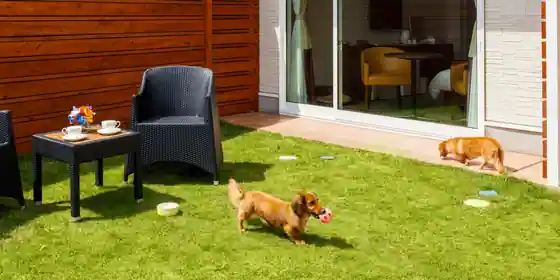
&WAN Kujukuri
Asovillage
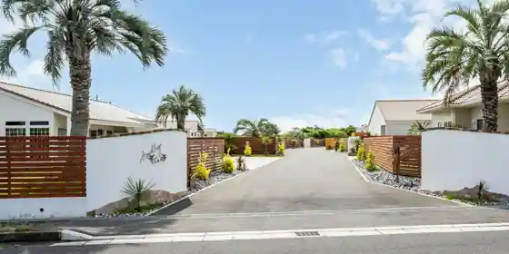
Asovillage
ASOVILLA
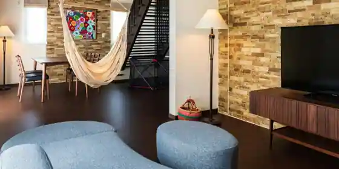
ASOVILLA
古民家宿るうふ 杉之家
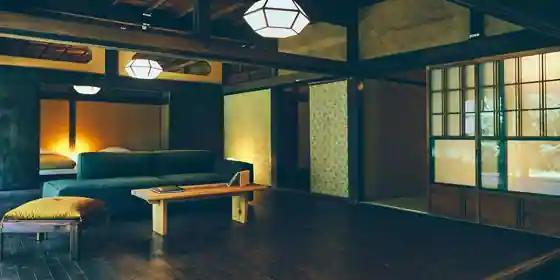
Ko Minka Yadoru Ufu Sugi Yuki Ie
Inn in Matsuo, Sanmu with a renovated traditional house.
閑閑舎
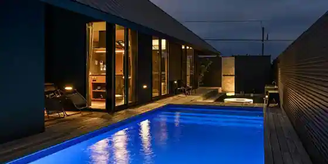
Hima Hima Sha
Inn in Iyukinai, Sanmu with a sauna.
ファミリーロッジ旅籠屋・九十九里店
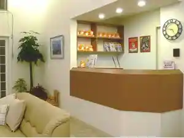
Famiri Lodge Hatago Ya Kujukuri
Mountain lodge in Matsuo, Sanmu with breakfast available and family-friendly stays.
九十九里 南国ガーデンBBQが人気 料理の宿 ニュー太洋
Kujukuri Nangoku Garden BBQ Ga Ninki Ryori No Yado Nyu Taiyo
ドッグコテージＲｅｎｕ
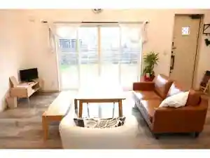
Doggu Cottage Renu
Cottages in Shirahata, Sanmu with pet-friendly rooms.
＆ＷＡＮ 九十九里
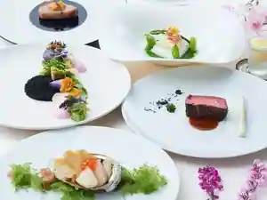
&WAN Kujukuri
ＤｏｇＣｏｔｔａｇｅＯＴＴＯ
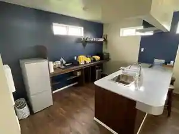
DogCottageOTTO
Inn in Matsugayaro, Sanmu with one group per day.
Seaside House Cozy
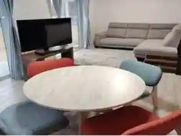
Seaside House Cozy
Inn in Matsugaya, Sanmu with pet-friendly rooms.
Ocean Villa Ku－coco
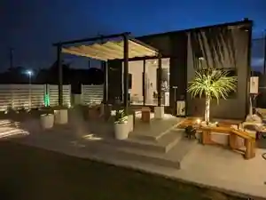
Ocean Villa Ku-coco
Dining
ウシマル
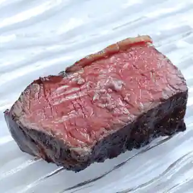
Ushimaru
お魚処 うおとも
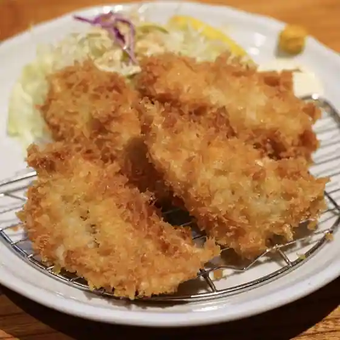
O Sakana Tokoro Uotomo
&WAN九十九里
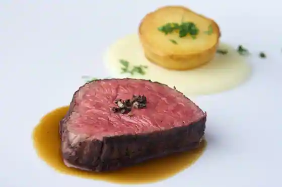
&WAN Kujukuri
めだか寿司
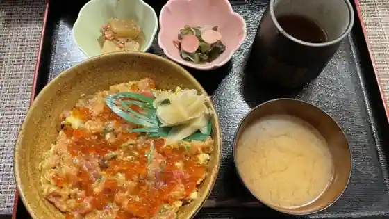
Medaka Sushi
金沢食堂
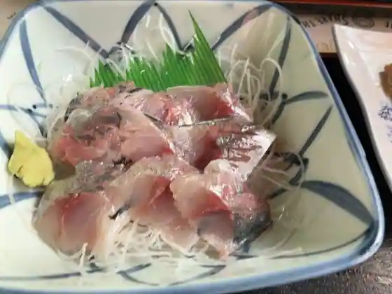
Kanazawa Shokudo
橋本食堂
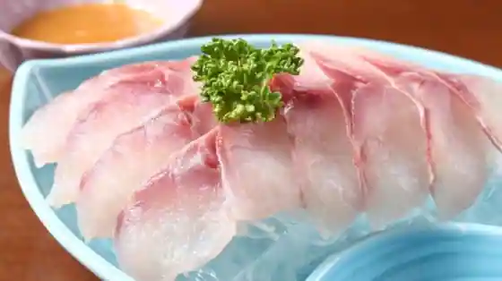
Hashimoto Shokudo
うおたみ
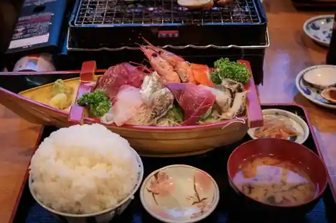
Uotami
中華料理 佐久間
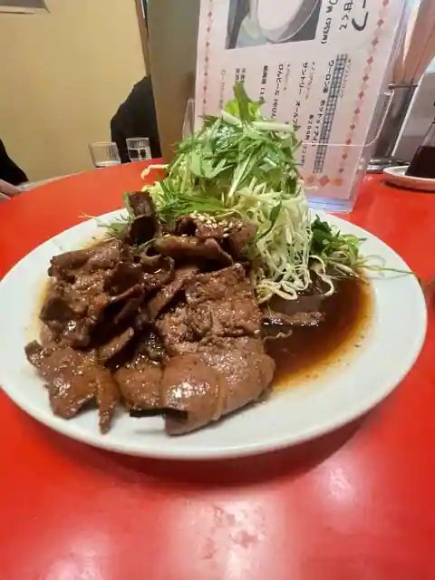
Chukaryori Sakuma
ぐうらーめん
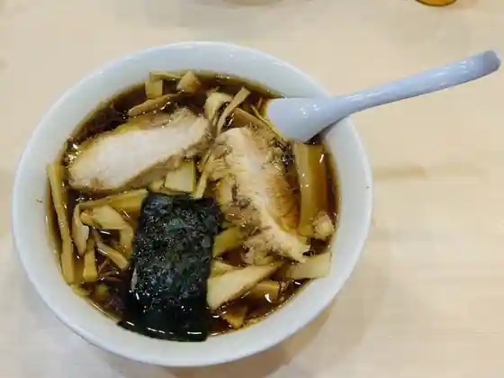
Gu Ramen
ゴッチ
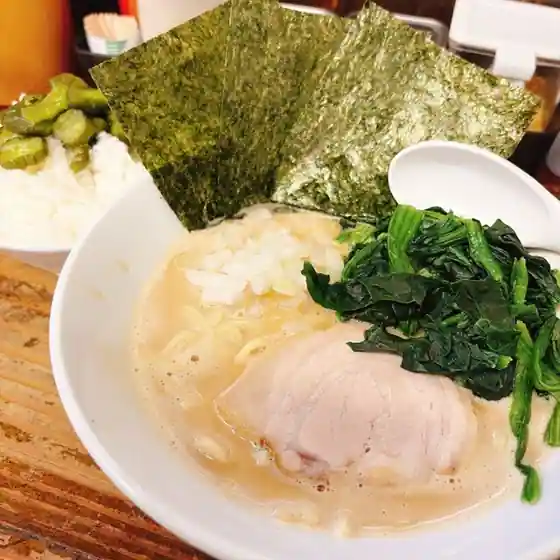
Gotchi
北海道ラーメン 帯広ロッキー 総本店
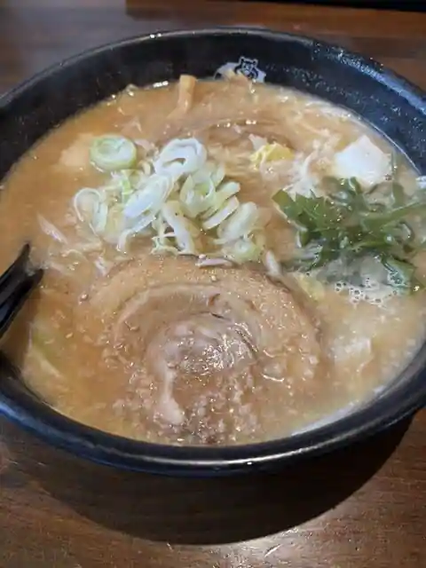
Hokkaido Ramen Obihiro Rokki So Hon
しょうえい食堂
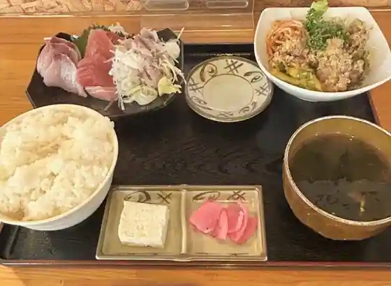
Shoei Shokudo
鈴木せいざえもん 別館
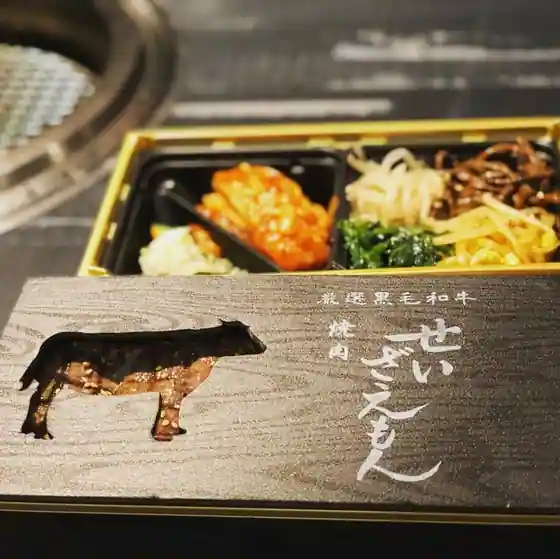
Suzuki Seizaemon Bekkan
たまごや とよまる 松尾店
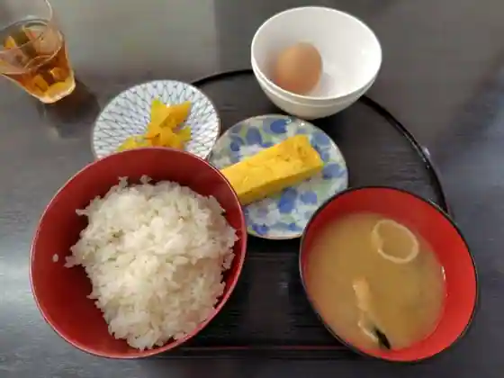
Tamagoya Toyomaru Matsuo
ら～めん コジマル 東金店
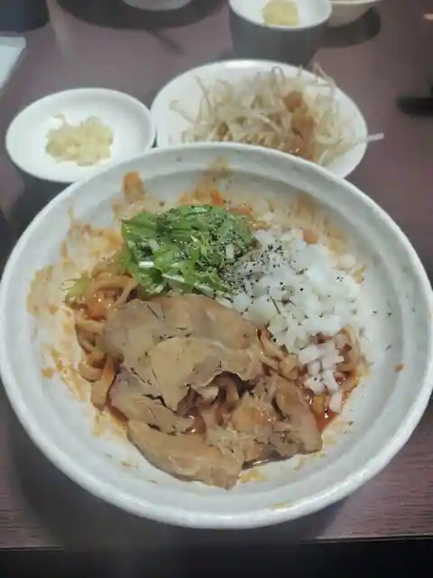
Ra ~ Men Kojimaru Togane
長浜豚骨まるえいラーメン
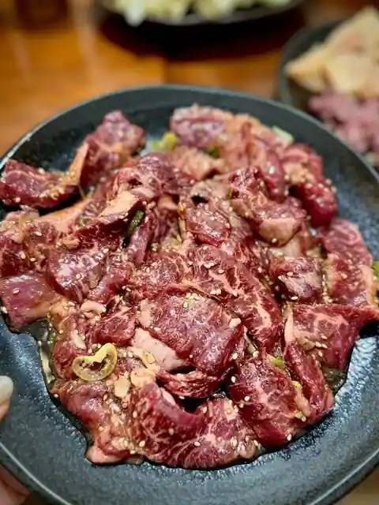
Nagahama Tonkotsu Maruei Ramen
お食事処 飯田家
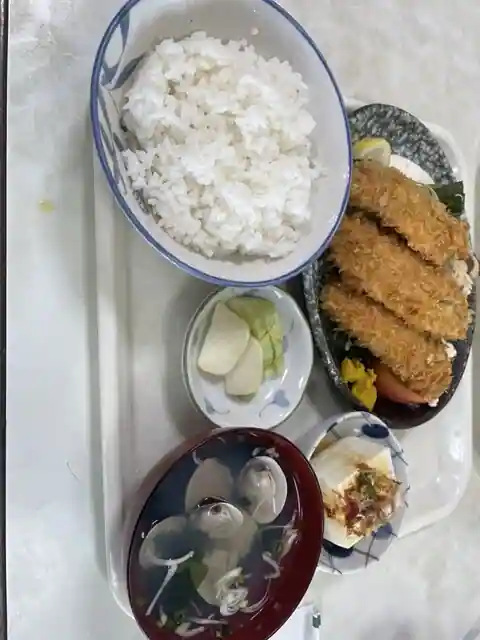
O Shokuji Tokoro Ida Ie
仲よしドライブイン
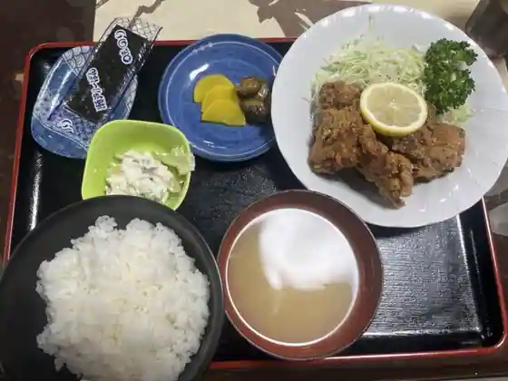
Naka Yoshi Doraibuin
道の駅 オライはすぬま
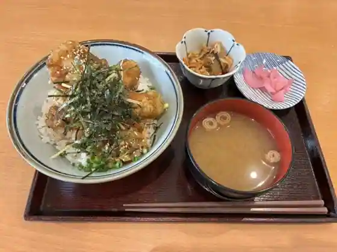
Michi No Eki Orai Hasunuma
手打ちラーメン珍來 成東店
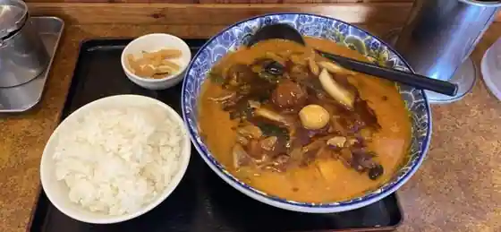
Teuchi Chi Ramen Chin Rai Naruto
大和
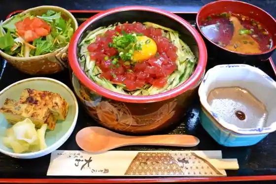
Yamato
山田ゴルフ倶楽部
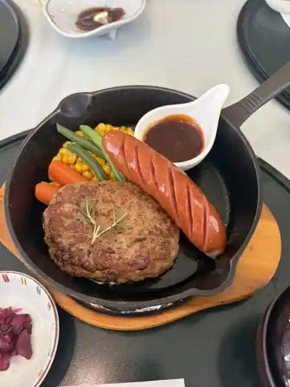
Yamada Gorufu Kurabu
パンケ 成東店
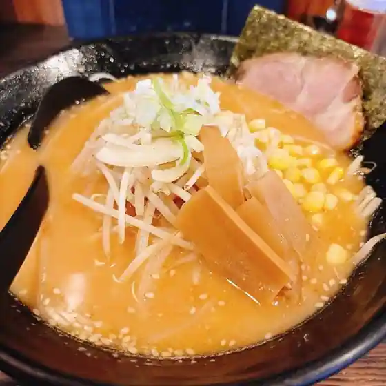
Bakery Ke Naruto
ふらんす屋
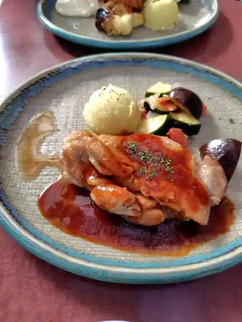
Furansu Ya
Sights
Hasunuma Seaside Park
Roadside Station Orai Hasunuma

Hasunuma Uota Garden

Sambu no Mori Park

Nami Setsu Fudo In (Naruto Yama Fudo Incho Kachi Tera)

Somurie Farm
Jizake Mai Sakura Moriya Shuzo
Ari no Mi Farm
Denka Beach
Ito Sachio no Seika (Sanmu Folk History Museum)
Aiba Ichigo Sono
Nakashita Beach
Sanmu Midori no Kaze Sanmu Mise
Tegena Farm
Arino Mi En Oto Campground
Oyama Farm
Ishibashi Ichigo Sono
Uchiyama Ichigo Sono
Sutoroberiihausu Ote
Kaji Ichigo Sono (Kyu Kote Ichigo Sono)
Hirokuchi Ichigo Sono
Sanmu Midori no Kaze Naruto Mise
Ishida Farm
Kubo Hara Ichigo Sono
Midorikawa Ichigo Sono
Junko no Ichigo Sono
Maruki Ichigo Sono
Sho An Ichigo Sono
Akira Ichigo Sono
Sugitani Ichigo Sono
Sakuta Ichigo Sono
Kawatsura Ichigo Sono